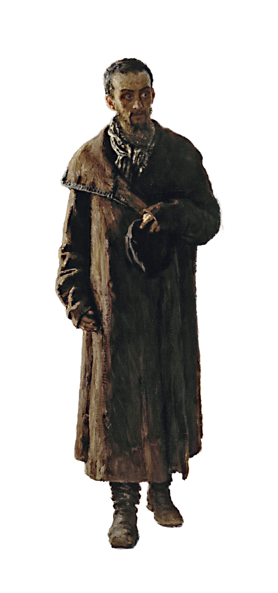
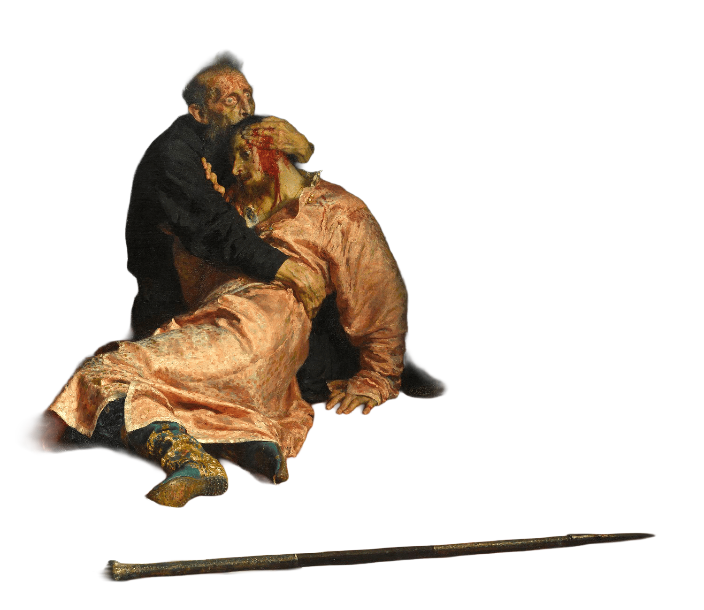
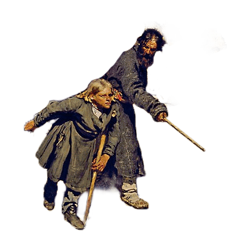
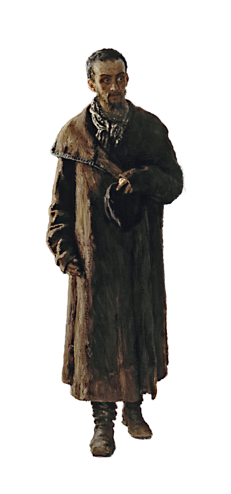
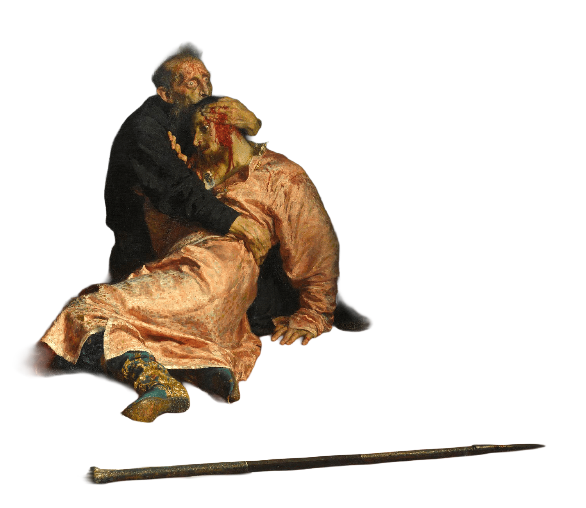
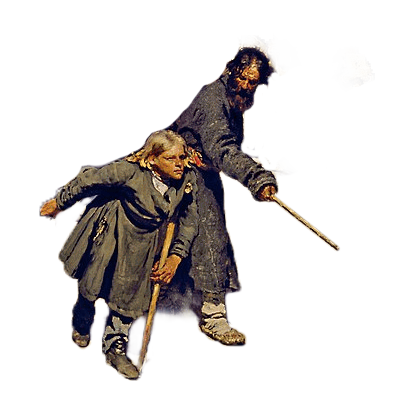

그의 대표작
 <볼가 강의 배를 끄는 인부들>
<볼가 강의 배를 끄는 인부들>
<아무도 기다리지 않았다.>

<1581년 11월 16일 이반 뇌제와 그의 아들 이반>

<쿠르스크 주의 십자가 행렬>

에 숨겨진 이야기와 그가 전하고 싶었던 사회의 모습에 대해 알아보자.
1844.8.5. - 1930.9.29.
19세기 러시아 사실주의 예술을 대표하는 화가이자 인물화의 거장.
-
1844년 우크라이나의 작은 도시 츄구예프에서 한 하급군인의 아들로 태어나 상트 페테르부르크 미술 아카데미에서 교육받았다.
레핀은 바실리 페로프, 바실리 수리코프 등과 함께 <이동전람파>를 구성했다.
러시아 사회가 안고 있는 정치적,사회적 모순들을 사실주의적인 묘사를 통하여 민중들에게 알리기 위해
러시아 전역을 순회하며 궁핍하고 고통을 받으면서도 인내하며 사는 민중들의 모습과 그들을 계몽하는 인텔리들의 모습을 주로 그렸다.
1894년 상트페테르부르크 미술 아카데미의 교수로 임명되어 1907년 교수직에서 은퇴할 때까지 학생지도에 전념했다.
생애 말년을 핀란드의 쿠오칼라에서 보냈고 1930년 9월 29일 86세의 나이로 사망했다.
그의 대표작
<볼가 강의 배를 끄는 인부들>
<아무도 기다리지 않았다.>

<1581년 11월 16일 이반 뇌제와 그의 아들 이반>

<쿠르스크 주의 십자가 행렬>

에 숨겨진 이야기와 그가 전하고 싶었던 사회의 모습에 대해 알아보자.

볼가 강의 배를 끄는 인부들
1870-1873
제국예술아카데미의 학생이었던 레핀은 날이 좋은 휴일에 네바강에 갔다가
여유롭게 휴식을 즐기는 상류층 사이 강가에서 배를 끄는 평민들을 보게 된다.
당시에는 수심이 얕은 항만에 접근이 어려운 배를 인부들이 마치 가축처럼 끌어 올려야 했다.
이 모습에 충격을 받은 레핀은 이 장면을 그리기로 마음먹고 해외유학을 포기하고 근처의 볼가강으로 향한다.
다양한 인부들을 만나며 이야기를 들은 레핀은 절망이 아닌
그들의 삶, 경험, 인간적인 아름다움에 집중했다.